The Dip as the skeleton
Motion and rhythm transfer
Your refund story, shot on The Dip's bones: the same macro ka-ching open, the same push-in, the same whip montage, the same orb lift-off, the same card on the call, the same whip to the product and the same punch-in close, in the same 25 seconds. New people, new store, new words. Same rhythm you already love.
Why this technique fits this story. You asked for the refund story "but leverage The Dip for camera motion, rhythm shots". Seedance 2.5 has a reference type built for exactly that: a motion reference that "references motion and dynamic information from videos… action/expression/camera movement" (Prompt guide, Typical multimodal capabilities). Its 3D clay-model example says it in one sentence we reuse almost word for word: "Use the 3D clay-model reference video as the only reference for the entire video's camera movement, shot rhythm, shot-size changes… Strictly preserve the shot order, camera position changes, movement patterns, and pacing" (Prompt examples → Coarse-grained 3D clay-model video).
Why The Dip is turned into a flat grey blockout. The guide says "simple, coarse-grained 3D clay-model video generally works better as a reference" (Reference asset input recommendations) and warns that text in a reference video carries over: "Ensure that the reference video does not contain subtitles. Subtitles in a reference video may override the no-subtitle instruction" (FAQ → Subtitles). So blur alone was not enough: the first version (v1, 14 px blur) still let "birthday candle", the chat bubbles and the jars show through. In v2 every banner, screen, call card, chat bubble, phone, label and jar is painted over with a flat grey panel, frame-timed to its shot. The rest is blurred and cut down to 9 flat tones, so people become simple figures, as the guide recommends. No readable text is left, and all 11 hard cuts still land on the same frame.
Why it fits the 30 s limit. Video refs may total "no more than 30 seconds" (Reference asset input recommendations). The skeleton is 25.0 s and the end screen is 4.5 s, so the total is 29.5 s. The ending gets the last 5 s, and The Dip's own end (flames → orb, 25.1 s) lands exactly where ours starts.
Prompt shape: asset mapping → one-sentence summary → detailed plot with integer-second timestamps → additional notes (Basic prompting techniques; Timestamps: "1-second intervals… avoid gaps").
Input
One pass. No extension, no edit pass. Upload order follows first appearance (FAQ → Incorrect character-to-reference mapping): the skeleton first, then the images in the order they enter the film, then the end screen and the voices.
Reference assets, in upload order
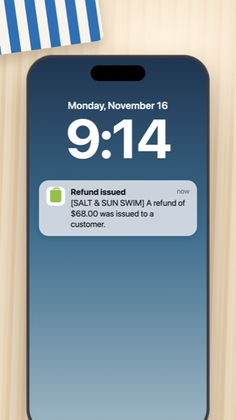
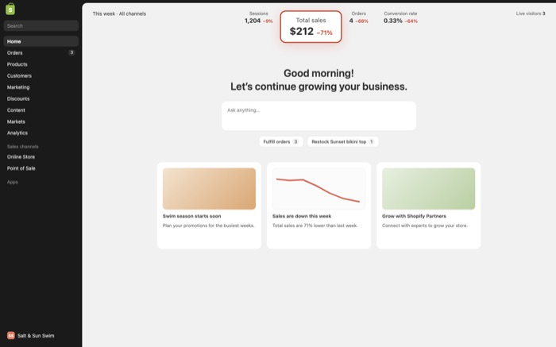
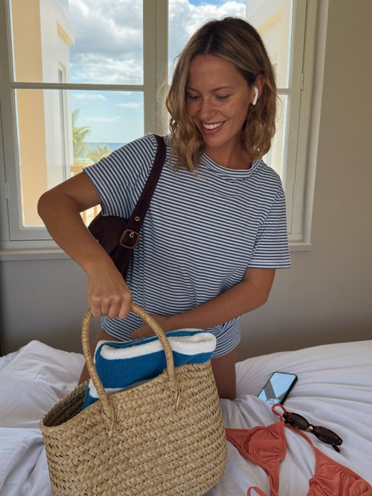
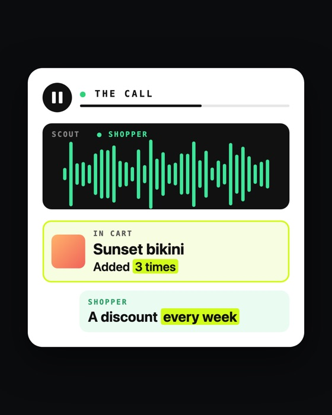
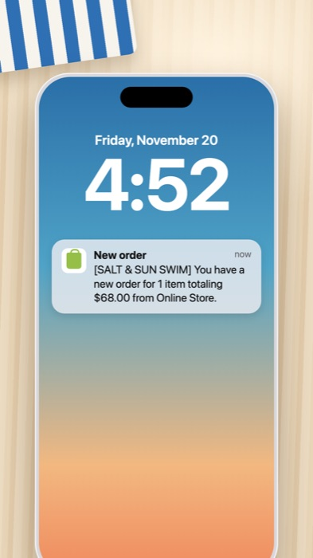
The special asset: The Dip, cut down to a skeleton
The leak fix, every 0.5 s (v1 left, v2 right)
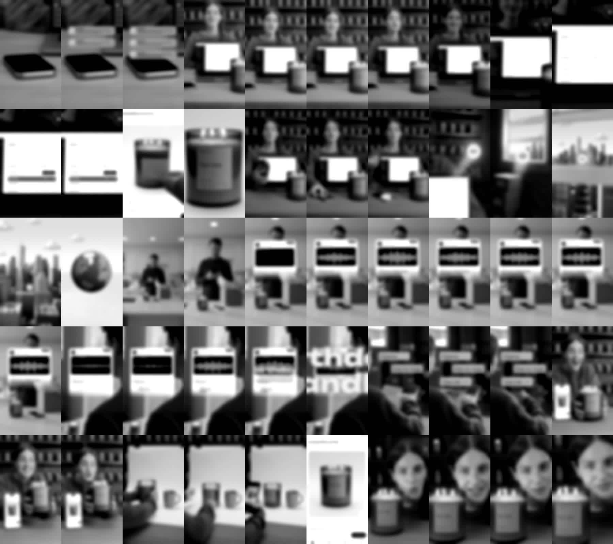
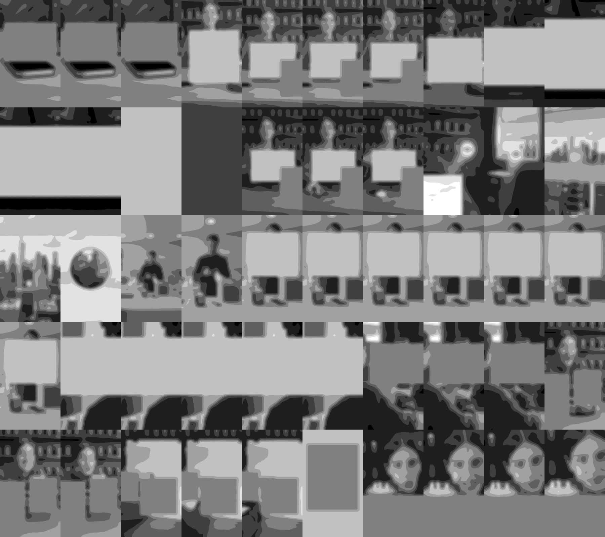
Measured cuts (ffmpeg scene detection on H174-real-kaching-3.mp4, 24 fps)
The Dip has 16 shots in 30 s, and the longest stretch with no cut is the 3.5 s call push-in. Our map keeps all 16 slots in the same order.
Beat-to-beat map: The Dip at t → our shot
| The Dip | Dip shot (measured) | Our shot | Preview | |
|---|---|---|---|---|
| 0.00–1.50 Macro: phone on the table, banners slide in, ka-ching. Locked camera. | → | 0–2s Macro: her phone among folded bikinis, ONE banner lands: Refund issued (Image 1), on the ka-ching. Oh, come on. A refund. (starts on the banner) | 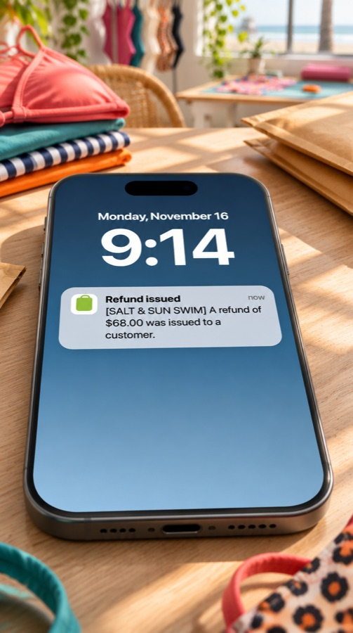 | |
| 1.50–1.83 Fast pull back off the phone to a medium of her (no cut). | → | 0–2s Same fast pull back as she snatches the phone up. …A refund. (ends on the pick-up) | ||
| 1.83–3.60 Medium, front, talking to lens: the hook. | → | 2–4s Medium front, to lens, phone in hand. Sales are so low this week. | ||
| 3.60–5.79 Slow push in to the laptop: sales line drops. | → | 4–6s Slow push in past her until the dashboard (Image 4) fills the frame, sales line sliding down. No words. — | same as left, our world | |
| 5.79–6.83 Whip montage: 5 flash cuts (5.79, 6.04, 6.17, 6.25, 6.42), the wrong fixes. Silent + whooshes. | → | 6–7s 5 flash cuts: trackpad, typing, discount page (Image 5), slider to 30%, finger over Save. Silent + whooshes. — | ||
| 6.83–8.58 Medium front: she lifts her phone, the ask; the orb lifts off the phone. | → | 7–9s Medium front: she sits back, lips closed, inner voice; her phone lights and Scout lifts off it. (V.O.) Maybe it's time for a discount. | same as left, our world | |
| 8.58–11.08 Orb rises past the laptop, out the window, over the city, to the globe: one continuous move. | → | 9–11s Time stops in the studio. Same flight: Scout past the laptop, out the window, over a sunny seaside town, to a round skylight (= the globe). Scout: Not yet. There's something you don't know. | ||
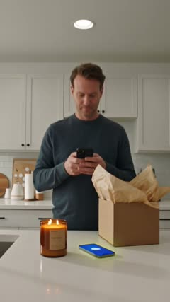 | 11.08–12.17 Dive lands: wide on the shopper at his counter, phone rings. | → | 11–12s Same move, no cut: dive through the skylight; wide on the shopper in her bedroom packing a beach bag, one ring. (Scout's line ends) | same as left, our world |
| 12.17–15.63 Push in; the call card rises off his phone; Scout asks. | → | 12–15s Push in as she taps an AirPod; call card (Image 8) rises off her phone; Scout asks. Scout: Sunset bikini, three times in your cart. What stopped you? | 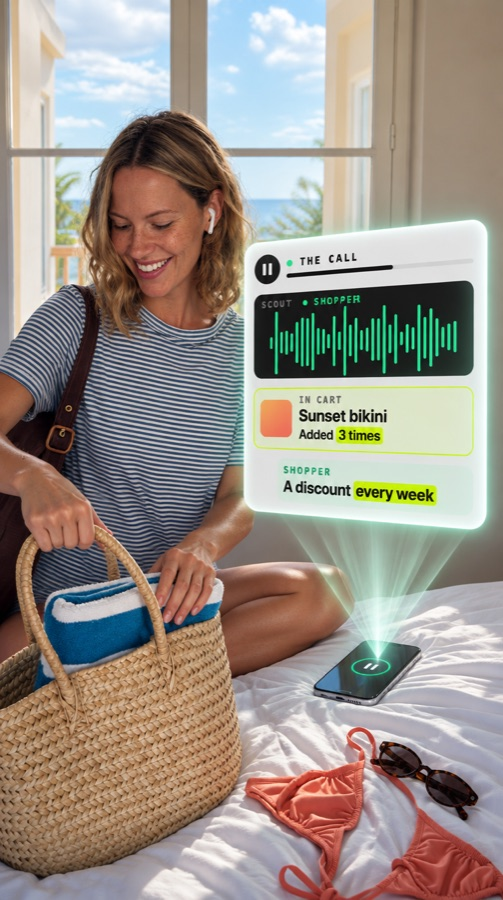 | |
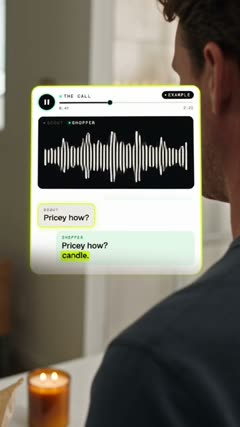 | 15.63–17.83 Over his shoulder; the answer; a word flies off the card at the lens. | → | 15–18s Over her shoulder; the answer; the whole card tilts toward the lens (no words fly: subtitle-safe). Shopper: You run a discount every week. I'm just waiting. | same as left, our world |
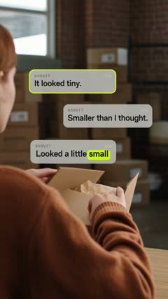 | 17.83–19.38 Back in the studio, over her shoulder: cards float beside her. | → | 18–19s Back in the studio, over her shoulder: the call card floats by her laptop; tick, time restarts, swimsuit drops. — | same as left, our world |
| 19.38–21.04 Whip pan to close-up WITH THE PRODUCT: the aha. | → | 19–21s Whip pan to close-up with the coral Sunset swimsuit on its hanger: the aha. I'm training them to wait. | ||
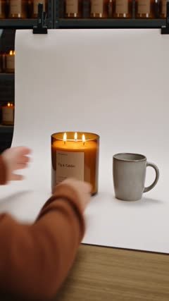 | 21.04–22.42 The fix, hands only. | → | 21–22s The fix: her hands delete the discount. Noted. | same as left, our world |
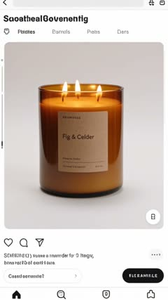 | 22.42–23.17 Insert: phone screen fills the frame. | → | 22–23s Insert: later that week, her phone screen fills the frame, full-price order (Image 9) on the ka-ching. — | same as left, our world |
 | 23.17–25.08 Punch in, close-up to lens, product in front: the closing line. | → | 23–25s Punch in, close-up to lens, coral swimsuit in front. Full price. Glad I asked. | |
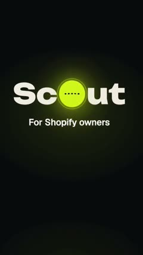 | 25.08–30.04 End screen. | → | 25–30s Video 2 exactly: H158 talking 'o'. Scout: Scout interviews your shoppers for you. Get free early access. | same as left, our world |
Previews are GPT Image 2.6 stills (8 images, 2.25 credits, one retake after a filter hit) made from the same face, studio and screen refs. They are for this page only and are not sent to Seedance. They were made before this round's remap, so they show the look, not the exact framing. No new images were made this round. What we take: motion, framing, timing. What we never take: The Dip's people, candles, words, screens or EXAMPLE pill.
The exact prompt
sd25-pe check, Nov 15 2026 (card shelved, script kept clean): the whole skill was re-run against this prompt and all 14 assets (SD25-CHECK.md). It found 6 fails and fixed them in the prompt to send: Emile's Nov 15 lines ("Oh my god... I'm training them to wait." as a shocked realisation; "You know what? Let's delete all these discounts." instead of "Noted."), the delete as a hard cut from behind her at the laptop with the trackpad click and a dark "Discount deleted" toast, the departure from The Dip's cuts after 21 s named, and Video 2 down to one role (the end shot; Scout's earlier voice in words). The "Ours" tab and shot tables are kept as round history.
What sd25-pe changed, and why
| # | Ours, last round | sd25-pe compile | sd25-pe rule |
|---|---|---|---|
| 1 | "A live-action vertical ad" | "vertical" removed | No aspect ratio, duration, resolution or sound toggle in the text. 9:16 and 30 s go in the Higgsfield settings only. |
| 2 | No routing line | Adds "Please note that this is not video editing." after the goal | Compatibility gate: Video 1 is 25.0 s but the output is 30 s (more than 0.3 s apart), so the gate fires and the line is required. Without it the model can treat Video 1 as a master to edit. |
| 3 | Video 1: "use it only for camera…"; the six shapes mapped in one sentence | Adds "do not adopt its blockout appearance, materials, or scene"; one line per shape ("The small bright dot in @Video1 corresponds to Scout.") | Coarse-blockout template; "each line must define only one subject… and its primary reference asset". |
| 4 | Video 2: "the final shot … and Scout's voice quality" (two roles). Images 4 and 5 shared a line. Images 1, 4, 5, 8, 9 and the voices said nothing about what not to take. | Each of the 14 assets has its own line with one stated role and what not to take. Video 2's one role is Scout, named with both uses: Scout's voice in every Scout line ("in the voice of @Video2"), and its picture and voice reproduced as the final shot from 25 s. Audio 1 and 2: "do not use its words" (both are unrelated reads). Image 6: only the orb, not the Scout letters around it. | "Every used asset must have one explicit role"; state what is adopted and what is not. |
| 5 | "<@Audio3>", "<whooshes>", the phone ring written as action | "<the order sound from @Audio3>", "<fast whooshes>", "<the shopper's phone rings once>" | Sound effects in <>, music in (), dialogue in {}: each mark keeps one job. |
| 6 | One blanket "English." at the end; no listener rule | Every line says the speaker, "in English", and on screen or off screen. The inner voice keeps her mouth closed; the shopper keeps her mouth closed while Scout asks; silent shots say "No one speaks." | Dialogue ledger: speaker, language and on/off screen per line; listeners keep their mouths closed. |
Independent check, fixes applied (H223 fix 1, Nov 14)
| # | What the check found | What changed in "Send this" |
|---|---|---|
| 1 | The card's link still served round 2. | This page, with the compile, is now the version at the card's link. |
| 2 | Image 8 line said "do not use the beige background"; the card sits on near-black (#0b0c0e). | "do not use the black background". |
| 3 | Video 2's role line said "only the final shot" while Scout's 9–15 s lines use its voice. | One Scout role naming both uses: Scout's voice in every Scout line, and the final shot from 25 s. Row 4 above corrected. |
| 4 | One line mapped two props (laptop and card); phone panels and the 19–22 s panels were unmapped. | Eight lines, one panel each, by time: 0–2 s phone = Image 1; 2–6 s laptop = Image 4; 6–7 s flashes = Image 5; 12–18 s card = Image 8; 18–19 s card beside the laptop; 19–21 s = the coral swimsuit; 21–22 s laptop = Image 5; 22–23 s phone = Image 9. |
| 5 | Shopper figure mapped at 11–19 s, but 18–19 s is the owner's studio. | "(11-18 s)". |
| 6 | Video 2 runs 4.50 s but its slot is 5 s. | "Reproduce @Video2 exactly, then hold its last frame to the end." |
| 7 | Scout's 7-word line had a 2 s shot (9–11 s) under "every line finishes inside its own shot". | 9–12 s is now one continuous move with no cut (flight, then the dive at 11 s lands on the shopper), so the line has 3 s inside one shot. The Dip's 11.08 s is a soft dive cut, so the camera map is unchanged. Dialogue is word for word the same (checked). |
Unused assets: none. All 14 uploads (2 videos, 9 images, 3 audio) have a role, so sd25-pe adds no 【Unused Assets】 block. The preview stills, The Dip frames, the presets and the v1 blockout on this page are never uploaded, so they get no number. Limits: videos 25.0 + 4.5 = 29.5 s (max 30), audio 13.4 + 11.4 + 2.6 = 27.5 s (max 30, each ≥2 s), 9 images (max 30). Not touched: the story, the 15 timestamps, the 10 lines, the shot order and the files sent. Nothing generated this round, 0 credits.
Files: prompt-sd25pe-final.txt (send this), prompt.txt and prompt-ours.txt (ours, last round: the exact text in the tab, the one that ran last round), prompt-sd25pe.txt (last round's hand-applied pass, retired).
Shot list
| Time | Size | Angle | Movement | Transition | Sound | Line | Borrowed from |
|---|---|---|---|---|---|---|---|
| 0–2s | Macro → medium | High, over the table | Locked, then fast pull back | Open | Ka-ching (Audio 3) | Oh, come on. A refund. | The Dip 0–1.83 s |
| 2–4s | Medium | Eye level, front | Static | Hard cut | Room tone | Sales are so low this week. | The Dip 1.83–3.60 s |
| 4–6s | Medium → screen | Eye level | Slow push in to the laptop | Continuous | Music dips | — | The Dip 3.60–5.79 s |
| 6–7s | Inserts ×5 | Side / overhead | Flash cuts | 5 hard cuts | Whooshes | — | The Dip montage 5.79–6.83 s |
| 7–9s | Medium | Eye level, front | Static; orb lifts at the end | Hard cut | Room sound drops; inner voice | (V.O.) Maybe it's time for a discount. | The Dip 6.83–8.58 s; guide V.O. format |
| 9–11s | Medium → aerial | Follows the orb | Continuous flight out the window, over the town | Time freeze, then flight (one move with 11–12 s) | Hush, then air | Not yet. There's something you don't know. | The Dip orb flight 8.58–11.08 s + Higgsfield Viral 'Frozen in motion' for the freeze |
| 11–12s | Wide | Eye level | Dive through the skylight | Same move, no cut | One phone ring | (Scout's line ends) | The Dip dive 11.08 s + Higgsfield Viral 'Eyes in' |
| 12–15s | Medium → close | Eye level | Push in | Continuous | Scout on the call | Sunset bikini, three times in your cart. What stopped you? | The Dip 12.17–15.63 s |
| 15–18s | Over shoulder | Behind shopper | Static; card tilts at lens | Hard cut | Card whoosh | You run a discount every week. I'm just waiting. | The Dip 15.63–17.83 s |
| 18–19s | Over shoulder | Behind owner | Static | Hard cut | Soft tick | — | The Dip 17.83–19.38 s |
| 19–21s | Close-up | Eye level | Whip pan in | Whip pan | Music lifts | I'm training them to wait. | The Dip product aha 19.38–21.04 s |
| 21–22s | Insert | Hands | Static | Hard cut | Click | Noted. | The Dip fix 21.04–22.42 s |
| 22–23s | Full-frame screen | Flat | Static | Hard cut, golden light | Ka-ching (Audio 3) | — | The Dip insert 22.42–23.17 s |
| 23–25s | Close-up | To lens | Punch in | Hard cut | After the bell | Full price. Glad I asked. | The Dip punch-in 23.17–25.08 s |
| 25–30s | End screen | — | As Video 2 | As Video 2 | Scout voice | Scout interviews your shoppers for you. Get free early access. | H158 end screen |
Higgsfield moves borrowed for the two shots The Dip doesn't have
Risks and what I'd watch on the draft
- The flat panels could come back as blank screens. The prompt maps each panel by its time, one line each (phone = Image 1 at 0–2 s and Image 9 at 22–23 s, laptop = Image 4 at 2–6 s and Image 5 at 6–7 s and 21–22 s, card = Image 8 at 12–19 s, swimsuit at 19–21 s). If a screen renders blank, the fix is a ~18-credit edit on that piece, not a retake.
- The blockout look could leak (grey, posterised). The text says the people, places and colour come from the images, and the guide says coarse blockouts are the type that works best.
- Shelves behind her are still rows of grey shapes in v2. They read as shelving, not candles, but if jars appear on her shelves, the next step is a flat panel over the shelf band too.
- The mask panels switch in steps during the 3.6–5.8 s push-in (three sizes). They follow the screen as it grows, but the model may read a step as a cut. Watch that the push stays one move.
- Swimwear moderation. The aha prop is a coral swimsuit on a hanger, and she wears a white linen shirt (a bikini-top still was filtered earlier).
- "Oh, come on. A refund." is fast: 5 words in about 1.5 s across the macro and pull back, because The Dip's to-lens shot (1.83–3.60) now carries "Sales are so low this week."
Eval: round 1 scorecard and fixes
| # | Judge's must-fix | What I changed |
|---|---|---|
| 1 | The 14 px blur still shows "birthday candle", the chat bubbles, the call-card layout and the jars. The page's claim that blurring removes them is false. | Rebuilt Video 1 as v2. 24 frame-timed flat grey panels cover the banners (0–1.6 s), the laptop and dashboard through the push-in (1.5–5.8 s), the montage (5.79–6.83 s, now 5 plain flashes on the same cuts), the call card and fly-out word (12.1–17.8 s), the chat bubbles (17.8–19.5 s), the phones and jars (19.4–22.4 s), the social screen (22.4–23.2 s) and the close-up jar (23.2–25 s). Then greyscale, 12 px blur and 9 tone steps. Still 25.0 s, and all 11 hard cuts re-measured on the same frames. Uploaded as media 50655db0. The page claim is corrected, and v1 and v2 are shown side by side. |
| 2 | 9–12 s: the prompt has a freeze, an arc and a dive, but Video 1 flies out the window over a city to a globe. | Took option (b). 9–11 s is now The Dip's flight: Scout goes past the laptop, out the window and over a sunny seaside town to a round skylight, mapped to The Dip's globe. The freeze stays on the studio only, and the arc is gone. 11–12 s dives through the skylight onto the wide, where The Dip lands at 11.08 s. |
| 3 | 4–6 s: The Dip pushes into the laptop, but ours pushed to her face. | Remapped as the judge asked. "Oh, come on. A refund." is said across the macro and pull back (0–2 s). "Sales are so low this week." is on the to-lens medium (2–4 s). 4–6 s pushes past her until the dashboard (Image 4) fills the frame. I also found and fixed 7–9 s, which was over the shoulder but is a front medium in The Dip; the discount page moved into the flash montage. |
| 4 | prompt.txt did not use the guide's dialogue format. | All 10 lines in all three versions now use "The owner's line (annoyed, deflated): {…}", with the action in the line before. |
| 5 | sd25-pe was applied by hand but labelled as a compile. | Called the Skill tool with "sd25-pe" this round and got "Unknown skill". The tab is renamed "Hand-applied sd25-pe (skill file v0.1.1, Skill tool unavailable)", the recommendation is reworded, and a warning says to run the real tool before any paid render. |
Nice-to-haves
- Trim: done. 966 → 671 words: repeated reference descriptions are cut and the reference lines are short.
- "every week" chip: done. The whole card tilts toward the lens, and no spoken words fly off.
- Full price unclear: done. The close is now "Full price. Glad I asked." (2 words added, for Emile to OK).
- "Sunset" dropped: restored ("the coral Sunset swimsuit").
- AirPods vs speaker: she taps an AirPod, and "through the phone speaker" is gone.
- Negative reference wording: the send version uses "use only the person / the space / the orb". (Round 3: the real sd25-pe compile uses the template's "do not use…" wording on every line, as the skill asks.)
- Scout's line: now "Not yet. There's something you don't know." Spoken total is 64 words, inside 60–70.
Round 2 status: all five must-fixes and all seven nice-to-haves applied. No video generated, no new images, 0 credits spent this round (total still 2.25). The draft render is still 90 credits and waits for Emile's go. Closed in round 3: the real sd25-pe tool run.